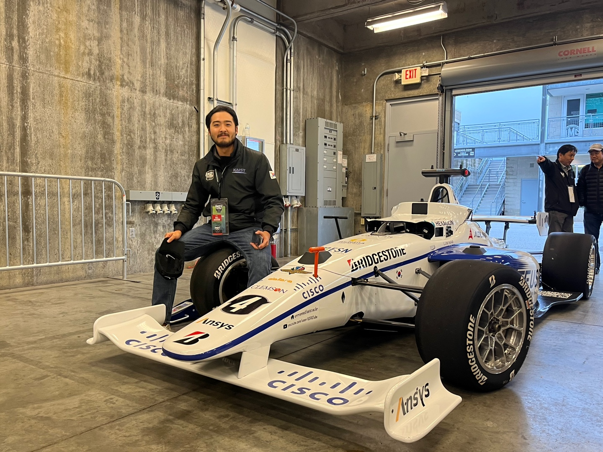

Boseong Kim, Ph.D.
Robotics Autonomy Engineer
Research: Drone Exploration, State Estimation, Robotics Autonomy
Affiliation: FieldAI
Email: ss7989ss@gmail.com
I am a robotics autonomy engineer specializing in drone-based exploration and real-world autonomy, with a strong focus on perception, state estimation, and decision-making under uncertainty. My work lies at the intersection of Physical AI and large-scale robotic systems, where algorithms must operate reliably beyond controlled environments.
During my Ph.D. at KAIST, I led autonomous UAV systems for complex and unstructured environments, including underground exploration, multi-floor inspection, and search operations. I served as the KAIST UAV Team Lead in the DARPA Subterranean Challenge Final Event, in collaboration with NASA Jet Propulsion Laboratory (JPL) as part of Team CoSTAR.
Beyond drones, I have extensive hands-on experience across diverse robotic platforms, including mobile robots, autonomous vehicles, quadruped systems, and humanoid robots. My work spans the full autonomy stack—from perception and state estimation to planning, control, and system integration—enabling robust operation in real-world environments.
I have led multiple award-winning teams in national and international robotics competitions, including 1st place (Presidential Award) in the International Autonomous Driving Challenge, 1st place (Minister of Science and ICT Award) in the AI Grand Challenge (Autonomous UAV), 1st place (Seoul Mayor Award) in the Hyundai Autonomous Driving Challenge, and top rankings in DARPA SubT and Indy Autonomous Challenge. My research has also been recognized with multiple Best Paper Awards in robotics conferences.
I am particularly interested in pushing the boundary of scalable autonomy—building systems that can perceive, explore, and make decisions in previously unseen environments, bringing us closer to truly autonomous robotic agents operating in the real world.